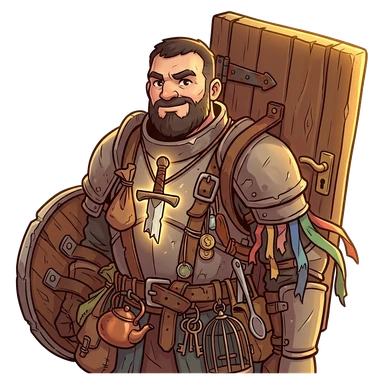
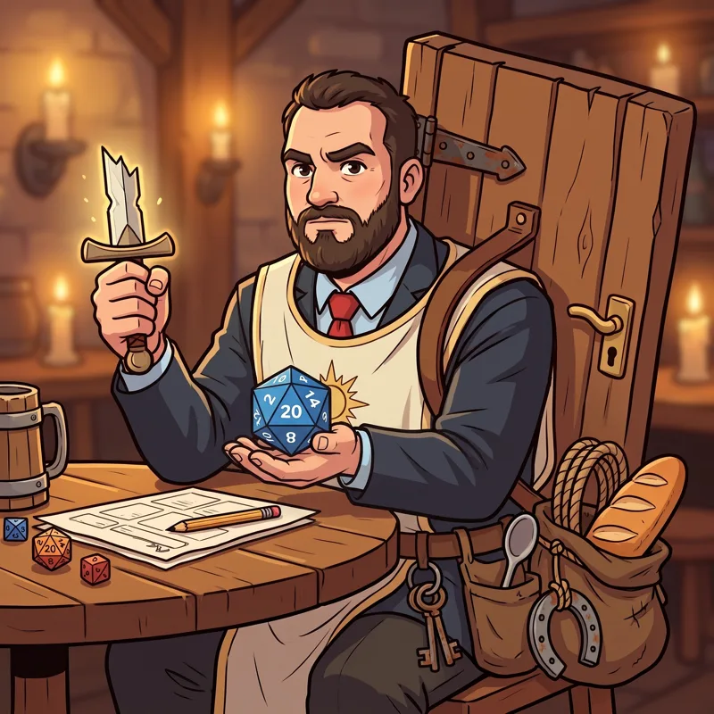

Lavek

 Cleric
Cleric
Lavek, Bearer of the Door
After their quest: Lavek, Bearer of the Gate
His holy symbol is a broken sword: just the hilt. One of his two shields is a door. He never throws anything away.
Ability
At the Inn: Amulets ×1.25 on every expedition. If he goes: ×2.5 on his
That's the value at Lv 10: at Lv 1 it's half and it grows every level.
How to get them
By winning their Legend Rumor (golden expedition). Joins at Lv 5. Dismiss them and they're gone for good.
Quest
Lavek and the other half of the sword · Ashen Maw
How it ends · Show spoiler
Lavek found the tip of his holy sword among Ignarok's treasures. He put it in his pocket, just in case. Now he carries a gate.
Combos
- The web (with Takuan): +15% success, but 15% longer
- Legendary treasure (with Xerth): Resounding success = guaranteed Amulet
Party names
Show spoiler
- Hoarders Anonymous: Lavek + Slim Noggins
- Friendly Fire: Takuan + Lavek
- Unverifiable Loot: Xerth + Lavek
Chronicles
They unlock in-game as they level up. Each gives 1 Rune the first time you read it.
Chapter 1 (Lv 1) · Show spoiler
The broken sword
Lavek was a soldier. His mentor taught him to fight, to stand on his own and to follow the god of war. He was also his best friend. In the company's last battle, the mentor fell and his sword broke in two. The company disbanded, but Lavek kept the hilt: today it is his holy symbol. Since then he travels as an adventurer, following what his master taught him. Above all one thing: never leave anyone behind.
Chapter 2 (Lv 5) · Show spoiler
The door
They had infiltrated a bandit hideout and were hiding behind a door, holding their breath. Footsteps. Just as the bandit was about to walk in, Lavek kicked the door with all his strength. The dice of fate rolled a 20: it was the most perfect door slam in history, and the bandit never got up again. That night, Lavek went back for the door. Today it is one of his two shields. It still has the doorknob. Sometimes, mid-battle, someone knocks on the other side. Lavek always answers "Occupied!"
Chapter 3 (after their quest) · Show spoiler
The other half
In the Ashen Maw, among the mountains of coins Ignarok had logged one by one, Lavek saw something glint. It was the tip of a broken sword. He held it next to his hilt: it fit. It was his master's sword. He said nothing. He put it in his pocket, just in case. And while he was at it, he took the gate of the dragon's treasury. Since that day he is no longer the Bearer of the Door: he is Lavek, Bearer of the Gate.
Chapter 4 (Lv 15) · Show spoiler
Just in case
Lavek throws nothing away. A bent spoon, half a rope, a horseshoe, a key that opens nothing: it all comes along, just in case. Xerth knows it and takes advantage: he swears every rock they find is a legendary treasure. Lavek keeps it. The amazing part is that, with so much keeping, sometimes Xerth is right. That's why when Lavek joins an expedition they come back with twice the Amulets. And a backpack that takes two horses to move.
Chapter 5 (Lv 20) · Show spoiler
The web
The defense was perfect: Lavek summoned a giant web across the pass and they waited. Takuan got bored and set it on fire with one kick. The enemies burned too, so technically it worked. Elioni, who was stuck inside and nobody had noticed, walked out singed and silent. Lavek, as always, carried everyone and everything back to the Inn. His master taught him never to leave anyone behind. Lavek applies it to things too.
Their player

This character is played by a real player from the D&D campaign that inspired the game.